Shiny rrisk user guide
Your quick start to perform probabilistic risk modelling using shiny rrisk
Getting started
The app shiny rrisk has been designed to support you in setting up, running and reporting a probabilistic risk model. The app requires no registration, subscription and is completely browser-based. All model input data as well as model results are only accessible to you during the browser session and must be saved on your device. The workflow of shiny rrisk has been designed to support good practices in in risk modelling and reporting.

The top row of the app displays the version of the app and provides basic functionality for managing models (Figure 1).
| NEW | Click here if you wish to create a new model and assign a Model name. |
| OPEN | Open a saved model or one of the demo models implemented in the tool. The extension of model files is “rrisk”. |
| SAVE | Download the model, results or the model report to your local system. |
| ABOUT | Check out here for a disclaimer, manual and contact information. |
The app runs on a server provided by the German Federal Institute for Risk Assessment (BfR). Your data is not accessible to BfR or any other party and irretrievably lost upon termination of the browser session or interrupt of the server connection. It is highly recommended that you Save your model regularly after each important modification.
- We recommend using “\(<\)agent\(>\)in\(<\)commodity\(>\)” as standard format for naming models.
- We recommend discussing the model concept with stakeholders (see tip below) in order to clarify the task and available data and resources.
First things first
Before developing a mathematical or probabilistic model it is advisable to clarify some important points.
- What is the question you wish to answer?
- What is the starting point and final outcome of the scenario you wish to model?
- What are the relevant/influential events and pathways?
- What are the relevant populations and subgroups to be considered?
- If exposure factors and disease statuses are involved, are there accepted case definitions available?
Building blocks of a model
A probabilistic risk model typically represents a series of events or situations that can be linked together in a logical or chronological order, whereby the final event represents the outcome of interest. For example, consider the hypothetical shipment of one race horse from Argentina to Germany. The task is to quantify the probability of the horse to be infected with equine infectious anemia (EIA, see FLI, 2017, accessed 9.5.2025). Note that this example is for illustration only. Each building block of the model requires clarifications and definitions which are tailored to the specific problem at hand. Some of the clarifications can only be provided by the customer (risk manager) and others by domain experts risk assessors. For larger projects, stakeholders should be involved in this process.
- Risk question: defines the outcome of interest; what is the probability that the introduced horse is infected with EIA virus?
- Scope: defines what is included or excluded from the assessment; here economic and epidemiological consequences are beyond the scope.
- Pathway and scenario: define all relevant steps and events; here the selection of the horse, legal and sanitary transport requirements, transport, border health checks shoud be considered.
- Model parameters (denoted “nodes” in shiny rrisk): define all input and output quantities required in the model; here the minimum set of parameters include the prevalence of EIA in Argentina, the probability of infection at boarding and the probability of infection at introduction of the animal after de-boarding formalities. Additional parameters may apply.
- Components of the model: may structure the parameters into logical groups which makes it easier to discuss the model with individual domain experts and provides a useful structure of the report; typical components for a larger import risk models include the entry assessment, exposure assessment, consequence assessment and risk estimation (see OIE, 2018, accessed 9 May 2025).
Visualisation
It is recommended to sketch a visual representation of the conceptual model. The flowchart for the simple example above (Figure 2) may support the discussion about required data and additional nodes such as for diagnostic testing.
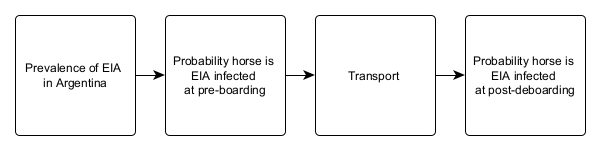
Building a model
Building a model is a complex process. Let’s assume that you have already defined the objective and scope and that you have a sketch of all important elements of the model (see section `Getting started’). It seems that you are ready to go!
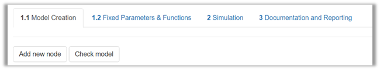
A model in shiny rrisk consists of so-called nodes. You may also define fixed parameters and functions available for the definition of nodes.
| Add node | Create a new node and launch its description and mathematical definition. |
| Check model | Verify that a simulation model can be built from the mathematical and numerical model input you have provided. |
Remember to save your model after adding each node.
Creating a node
A so-called “node” in shiny rrisk is what you would refer to as a parameter or numerical model input. You will see later on that model parameters are actually nodes if you represent your model as a graph. This enables us to use powerful tools for visualisation and analysis.
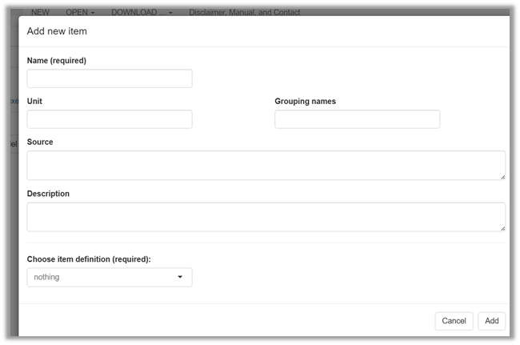
Upon launching Add node, a window pops-up with several free-text fields.
| Name* | Each node has to have a unique name starting with a letter. Numbers and underscore are allowed. An error message occurs upon missing or invalid entry. |
| Unit | The physical measurement unit should be entered here if applicable. |
| Grouping | A grouping name may refer to a particular module of the model or step in the event tree. It is possible to define membership of one node to more than one group in which case the group names are comma-separated. The groups are visualised in the graphical representation of the model and are used to organise the model documentation. |
| Source | The source of information about the node should be provided according to good scientific practice. If a bibliographic reference is available it should be entered using the format “Author(s), Year (doi code )”. |
| Description | All relevant information required for documentation and verification should be provided. This may include any underlying assumptions and uncertainties. The text may be structured using sub-headers (see example for markdown syntax below). |
| * | Required |
Remember to save your model after adding nodes and/or making important changes in the model
Markdown syntax is recommended to provide subheadings in free text fields. The Alizarin red S in Eel model provides an example of markdown in the description of the model and model parameters (e.g., bootstrapping). Markdown is also available in free text fields to generate formatted output in the report file. Some examples are given below (Figure 5).
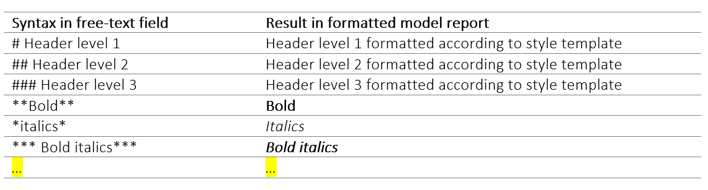
You can find more information at RStudio, 2016 .
- Be consistent with the style of node names within your project. Short names are preferred for reasons of readability and aesthetics in tables and figures (e.g., vowels can be omitted to shorten a name).
- Provide units for all nodes. This allows checking the unit of the outcome quantity.
- Use a consistent logic to define groups names. These groups may, for example, represent the sections of risk assessment (hazard identification, hazard characterisation, exposure, risk characterisation), steps of an exposure pathway or modules of a microbial risk assessment.
- The rules for naming nodes in shiny rrisk are inherited from and ensure compatibility with the software R.
- Node names may be changed later on if needed (see section on editing model). In this case shiny rrisk automatically updates all references in the mathematical expressions (not in the free-text fields) to maintain consistency.
Defining a node
The mathematical buildings blocks available in shiny rrisk include expressions and distributions. Both can be defined in various ways to maximise your flexibility.
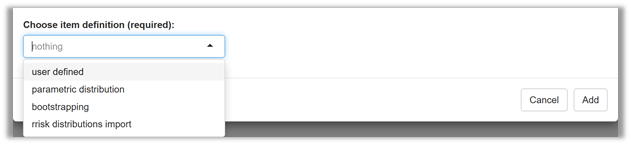
Your options also include bootstrapping and the import from a distribution fitting project (see below). The first option user defined allows you to define a node using a mathematical expression (Figure 7).
User defined expression
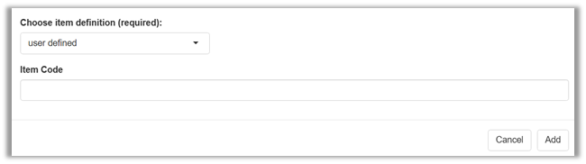
| Expression | A mathematical expression is entered here that can be evaluated similar to a line of code in the software R. At least one term of the expression is another (distribution) node, which is referred to as a “parent node”. Parent nodes that do not yet exist in the model are referred to as “implicit nodes” and will be generated automatically by shiny rrisk. |
In the Alizarin Red S in eel model the outcome \(Y\) (dietary intake of ARS per kg body weight and year through consumption of eel marked with ARS) is defined in terms of \(I\) (concentration of ARS in edible tissues at time of catch) and \(M\) (mean consumption of European eel per year per body weight). Thus, \(I\) and \(M\) are both parents nodes of \(Z\). This example also illustrates the common case that the final outcome is defined in terms of parent nodes (Figure 8).
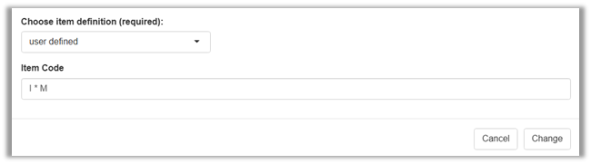
Consider the simple model
\[A = B * C.\]
The user can start creating the model by defining the node \(A\). As a result, shiny rrisk generates not only the node \(A\), but also two implicit nodes \(B\) and \(C\) based on the mathematical expression for \(A\). However, the model cannot be executed until all implicit nodes are correctly defined. The same model could also be implemented in reverse order, starting with the independent nodes \(B\) and \(C\).
- Use the model graph (see later) to identify nodes that were implicitly generated based on a spelling mistake in the node definition.
- Code expressions may contain any function that is part of the R base package.
The tool’s ability to create implicit nodes allows users to define a model by starting with the result function and working backwards to define all parent nodes until the complete model is created. This offers maximum flexibility when building a model.
Parametric distributions
The main characteristic of probabilistic risk models is the use of probability distributions to reflect either variability or uncertainty.
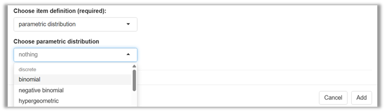
Once you have selected parametric distributions you can choose from a number of discrete and continuous distribution families (Figure 9).
| Choose parametric distribution | Select here the distribution family for the new node. |
Discrete distributions
The following five discrete distributions are available to generate a probabilistic node in shiny rrisk: discrete distributions: binomial, hypergeometric, Poisson, negative binomial and discrete.
Continuous distributions
The following thirteen continuous distributions are available to generate a probabilistic node in shiny rrisk: uniform, beta, modified PERT, exponential, Gaussian, lognormal, Weibull, gamma, inverse gamma, shifted log-logistic, triangular, general and cumulative.
Special distributions
Two special distributions, are provided, the sigma distribution to describe an uncertainty distribution for the variance estimate and the Yule-Furry process which can be used in an exponential growth model (read more details below).
Variability and uncertainty
The user defines whether a distribution characterises variability or uncertainty. Variability is a reflection of a feature that varies among individuals in a population, e.g., body weight of exposed children of a defined age group (see HEV in liver sausages example below). This should be distinguished from uncertainty, which is a quantification of the limited knowledge about a population statistic, which is an unknown single value, e.g. the true mean body weight of individuals in the defined age group and region. Read more about this topic below.
Context-sensitive distribution parameters
Upon launching any of the distributions, a context-sensitive interface appears for completing the definition of required model parameters. This is illustrated using the the modified PERT distribution in the HEV in liver sausages example below.
Distribution fitting
A shiny rrisk module for fitting distributions is currently being developed.
Known parameter values versus parameter uncertainty
Distribution parameters can be entered as single numbers (see HEV in liver sausages example below). A single number (scalar value) implies that the true parameter value is exactly known. In this case, the distribution reflects variability under the simplifying assumption that both the distribution family as well as the distribution parameters are exactly known. In many cases, however, an uncertainty distribution is required to reflect uncertainty about the parameter value(s) or even a functional dependency of the parameter on other nodes. The latter is illustrated with the L.monocytogenes in cheese example model.
Lower and/or upper limit for truncated distribution
In shiny rrisk, many distributions can be defined in a truncated version by defining a lower and/or upper limit.
The objective of the example model HEV in liver sausages is to estimate the exposure with Hepatitis E virus (HEV) via consumption of sausage products made from pork (see shiny rrisk model report for further details). The model contains the variable Liver_prop to describe the amount of liver as ingredient in liver sausages in percent. This continuous quantity reflects variability (sausages contain variable amounts of liver depending on recipes and other factors). The modellers have chosen a modified PERT distribution with minimum 10%, mode 30% and maximum 50% for parameterisation. Note that shape parameter of 4 in the modified PERT is equivalent to the standard 3-parameter PERT model.
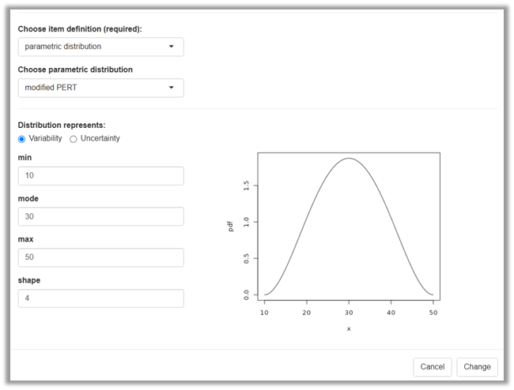
The objective of the L.monocytogenes in cheese model is to estimate the risk of infection with Listeria (L.) monocytogenes per meal. The model uses the variable dose of ingested L. monocytogenes per serving, \(D_{dist}\) modelled as Poisson distribution (Figure 11). The expression entered as distribution parameter \(\lambda\) uses as parent nodes the serving size \(S\) and the concentration of L. monocytogenes in the cheese at home \(LMC_{home}\), both of which express variability as well. This results in a dispersion of dose \(D_{dist}\) much wider than what would be expected with a fixed value for the distribution parameter \(\lambda\).
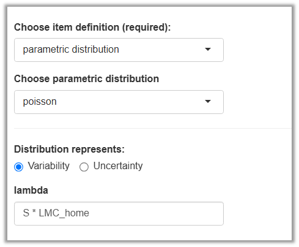
Quick guide for choosing appropriate distributions
Please refers to this compendium of distributions to select the apprpriated distributions and distribution parameters: Compendium of Distribution
@MG [ we could download the pdf so we will be sure that always it is there, in case website changes]
Some text required here.
Defining variability and uncertainty
“Variability reflects the fact that a variable is observed under different conditions. This generally refers to existing differences between individuals, and/or variation in time and space. Variability describes a property of the population. Variability in the population should be described but cannot be reduced. However, the variability in the data used for an assessment can be reduced by applying selection criteria (e. g. excluding individuals with specific traits). Stratification is another approach to reduce variability within the generated strata of the data. Changes over time occur on individual level (repeated observations, individual growth, changed behaviour or traits) as well as population level (population trends). The latter are often considered along with spatial factors. In case of changing exposure conditions of a population – e. g. due to (regional) changes in market supply over time – the variance of influential parameters might change as well. Uncertainty reflects the fact that the knowledge required for any step of the estimation process (problem formulation, scenario, model, parameters, calculations) is limited. Parameter uncertainty may be due to measurement errors at the individual level of observation and all sources of bias when selecting and aggregating observations into summary statistics for a given target population. The degree of uncertainty can be reduced on the basis of knowledge, at least in principle.” (Heinemeyer et al., 2022)
Note that uncertainty does not only apply to the level of a parameter (node) but can be related to problem formulation, scenario, model and calculations. In shiny rrisk, the user should describe those uncertainties in the free-text field of the model description (see Alizarin Red S in eel model as an example).
Using distributions to reflect variability and uncertainty
A distribution node can be defined by the user to represent the variability of a variable of interest, e.g. body weight. One typical situation is to parameterise the distribution using a single value for each distribution parameter, e.g., a single mean and a single standard deviation for the distribution of body weight obtained from observed data. The same principle applies for distributions with one parameter (e.g., Poisson) or distributions with three parameters as shown in the example above using the modPert (Figure 10). The variability of the quantity of interest is represented by one distribution node, which is parameterised with a single value for each distribution parameter. This is the standard situation for characterising variability (see top row shaded in blue in Figure 12).
More complex sources of variability may occur. For example, it may be known that a parameter of a distribution node for variability varies among sub-groups of the population. Typical examples include the litter effect in experimental animal studies or the cluster effect in observational studies. In this case the parent node for the distribution parameter represents variability at a higher aggregation level and “final” distribution node represents overdispersion, i.e. variability from various sources. Consider for example a Bernoulli distribution (for variability) with a binary outcome space (positive/negative), parameterised with a parameter for prevalence. It is a common finding in veterinary epidemiology that herd-level prevalences have a distribution. In such cases it may be possible to characterise the observed distribution of herd-level prevalences using a beta distribution and to use this beta as parent node to the Bernoulli.
Additional variability may also be due to structural sources. For example, the mean value of bacterial load may depend on temperature. In this case, the mean of the variability distribution can be modeled as a function of temperature. The factor of interest can be continuous (e.g., temperature) or discrete (e.g., age groups). In both cases, the independent factor is represented as parent node in the model and the final variability node represents variability due to structural (or functional) sources of variability.
The other motivation for using distributions in risk models is to represent parameter uncertainty. Assume you have a binomial distribution node in your model to represent variability of the random number of positive outcomes out of a fixed number of trials, given a defined outcome probability. A beta distribution for the latter would represent parameter uncertainty and act as parent node to the binomial distribution. The node mean_log10_c0 from the E.coli in beef example is another illustration for an uncertainty parent node to a variability node. The bootstrap method provides a powerful solution for obtaining distributions for parameter uncertainty (see later). Independent of the technique used, the interpretation of the final distribution node is a quantification of variability accounting for parameter uncertainty.
Last but not least consider a node in your model that directly represents a parameter uncertainty. The classical example for this is prevalence. The prevalence is an unknown single value, i.e. only one value can be true at the same time. The statistical uncertainty in the estimation of prevalence is represented by a beta distribution with parameters \(k+1\) and \(n-k+1\), where \(k\) and \(n\) denote the number of cases and sample size in estimation of prevalence. we don’t have a beta in our example models… unbelievable;). Since prevalence is a common parameter in may risk models, its quantification of uncertainty using a single node is a typical situation in risk modelling (bottom row shaded blue in Figure 12).
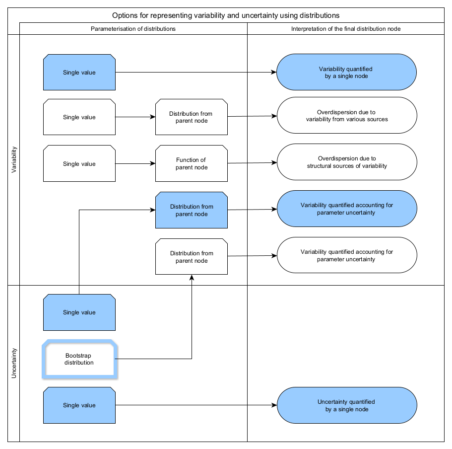
Sigma distribution
The sigma distribution is a stochastic sampling distribution for the variance. This random distribution can be used when the variance is estimated from the data. The chi-square (\(\chi^2\)) test allows to determine the best estimate and confidence interval for the standard deviation of a normally distributed population, when the population mean is known, then the sampling variance estimates the population variance from a sample of size \(n\). The sampling distribution of the variance (\(SD\)) follows a chi-squared distribution: \((n-1)*s^2/sigma^2 ~ X^2_{n-1}\). From this relationship, the sample variance can be simulated. [David Vose, Risk Analysis: a quantitative guide, 3rd ed., John Wiley & Sons, 2008. This is described in the Chapter: Data and Statistics, paragraph 9.1.2 The chi-square test]
The Yule-Furry process (Death only)
The Yule-Furry process is the stochastic model for an exponential growth model. [David Vose, Risk Analysis: a quantitative guide, 3rd ed., John Wiley & Sons, 2008. The Yule-Furry process is described in the Chapter: Microbial food safety risk assessment, paragraph 21.1.2 Growth and attenuation models without memory].
Bootstrapping
Using the non-parametric bootstrap algorithm you can generate a distribution for any summary statistic of a data set. You don’t need to make any distributional assumption about the original data or the uncertainty distribution of the summary statistic you are interested in.
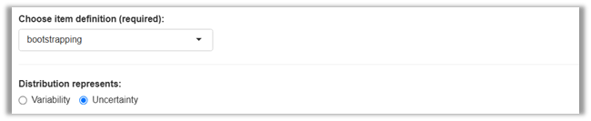
Non-parametric bootstrapping is available to generate uncertainty distributions for one or more statistics of a given data set (Figure 13). Details are illustrated using the example below.
Application of bootstrapping
The application of bootstrapping in shiny rrrisk involves three steps.
- Defining a bootstrap node, which involves documenting the data source and defining node names and corresponding statistics.
- Generating a bootstrap distribution node for each statistic requested in step 1 (automatically by shiny rrisk).
- Using the distribution node(s) generated in step 2 as parent nodes in the definition of further nodes.
An exposure model for Alizarin Red S (ARS) in eel has been developed to estimate the intake of ARS with consumed eel (see shiny rrisk model report for further details). A small (n=14) data set is available for individual consumption of eel per kg body weight. The task is to characterise the uncertainty of the population mean and standard deviation for individual consumption with accounting for the small data set and the correlation between the uncertainty distributions of mean and standard deviation (Figure 14).
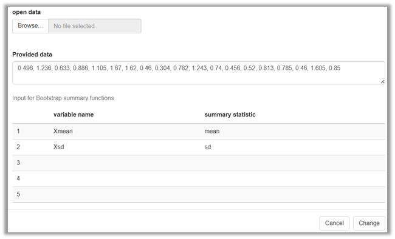
| Open data | [@Robert: please capitalise "open" and check the file requirements] A local csv-data file may be uploaded as source data. The comma-separated data file should use decimal point “.”, must not contain a variable name and consist of only one column. | |
| Provided data | Alternatively, comma-separated source data can be entered manually. Decimal point “.” should be used if required. |
| Node name | [@Robert: please consider change to Node name] Up to five nodes can be defined which will be automatically generated and contain the joint bootstrap distribution. | |
| Summary statistic | [@R=: please capitalise "summary"] For each node a proper name of the requested statistic is to be provided using R terminology. | |
The three steps in this example are the following.
- Defining the bootstrapping node X, providing a data source and requesting the two nodes Xmean and Xsd for the mean and standard deviation, respectively (Figure 14).
- Generating two nodes containing the bootstrap distributions Xmean and Xsd (automatically by shiny rrisk).
- Using the two nodes for defining a new node C for the population variability in consumption of eel per body weight consumed on single meal (Figure 15).
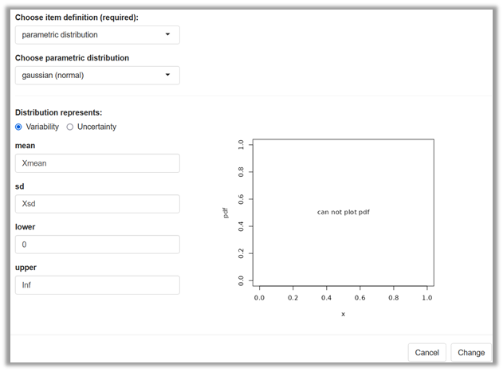
Bootstrapping - how does it work?
[@Robert: please check whether this description matches with the implementation] Non-parametric bootstrapping (bs) is able to create an uncertainty distribution for any single-valued statistic of a data set such as, for example, a mean value or a standard deviation without using any assumption about the underlying distribution. In shiny rrisk, any statistic known to the software R can be requested such as sum, mean, median, quantile(x, probs=.95) (95th percentile), var and sd to mention the most relevant ones. The bs uses sampling with replacement from the original data, whereby the original sample size is maintained and the requested statistic is evaluated for each of those bs samples. The bs sampling size is set to 2000? in shiny rrisk. The bootstrap algorithm is shown in Figure 16.
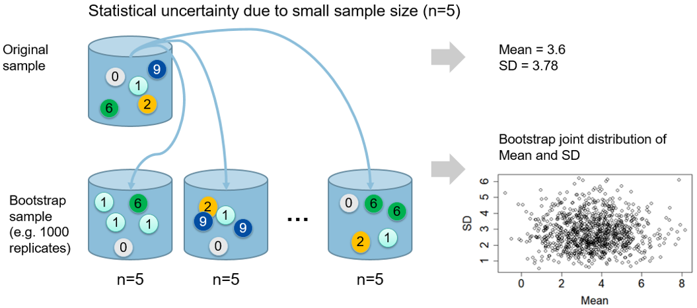
What can be limitations of bootstrapping?
An advantage of non-parametric bootstrapping is that you don’t need to make any assumption about the mathematical distribution of the original data or the uncertainty distribution of the required statistic. The latter emerges from bootstrapping and resembles the mathematically “correct” distribution. On the other hand, bs is not able to generate information about the population beyond what you have in form of the original data. You should not expect to obtain very useful information from very small, say \(n<5\) data sets. This is mainly due to the limited empirical support, even under the so-called assumption of independent, identically distributed observations in the sample.
A further limitation of non-parametric bootstrap is that distributions take a discrete shape for very small size of the original data sample. Sampling with replacement of \(n\) observations can result in exactly \(2n-1\choose n-1\) possible permutations of sampling \(n\) out of \(n\). The table below shows that more than 5 observations are needed to obtain only 126 permutations can occur. If the original data set contains outlier values, the discreteness can present a further limitation.
| Size of original data (\(n\)) | 3 | 4 | 5 | 6 | 7 | 8 | 9 | 10 |
| Number of possible permutations \(2n-1\choose n-1\) | 10 | 35 | 126 | 462 | 1716 | 6435 | 24310 | 92378 |
Node Table
After nodes are created, the following table will be created in shiny rrisk the information of each node in the model.
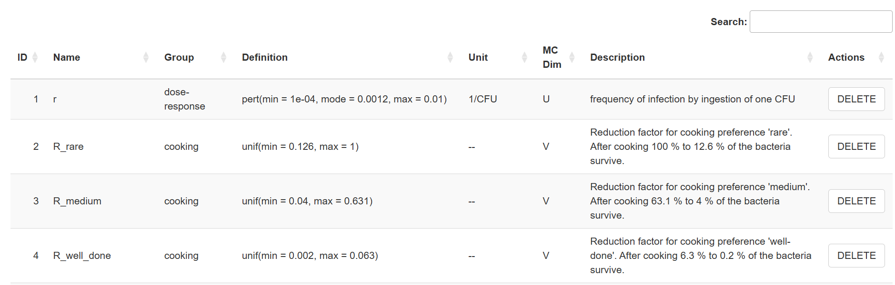
The table contains the node ID, a sequence number according to the order a node was created during the the model creation. The rest of the columns present the information of each node that was entered during the node creation.
The table allows the user to sort each column separately, delete a node and search for particular terms. This later is very helpful when working with large models.
Graph
As soon as a node is created, a shape (square, circle or star) with a given color will appear in the screen. The star is the node representing the outcome(s), or the node that has no dependent nodes (or “child” nodes).
@MG/RO [ - define Circle represents and squares - Is there any standards?]
There are two check boxes the user can choose to change the layout of the graph created by shiny rrisk.
The user can leave unchecked the option “stretch model graph” so all the shapes can be moved freely by clicking with the mouse on a node. Otherwise by selecting “stretch model graph” all the shapes will be automatically organized with the”outcome” node located at the far right. If this option is selected, the user can only move the shapes up and down. This feature will help organizing very quickly the model’s graph and improve the visualization, especially for models with large number of nodes.
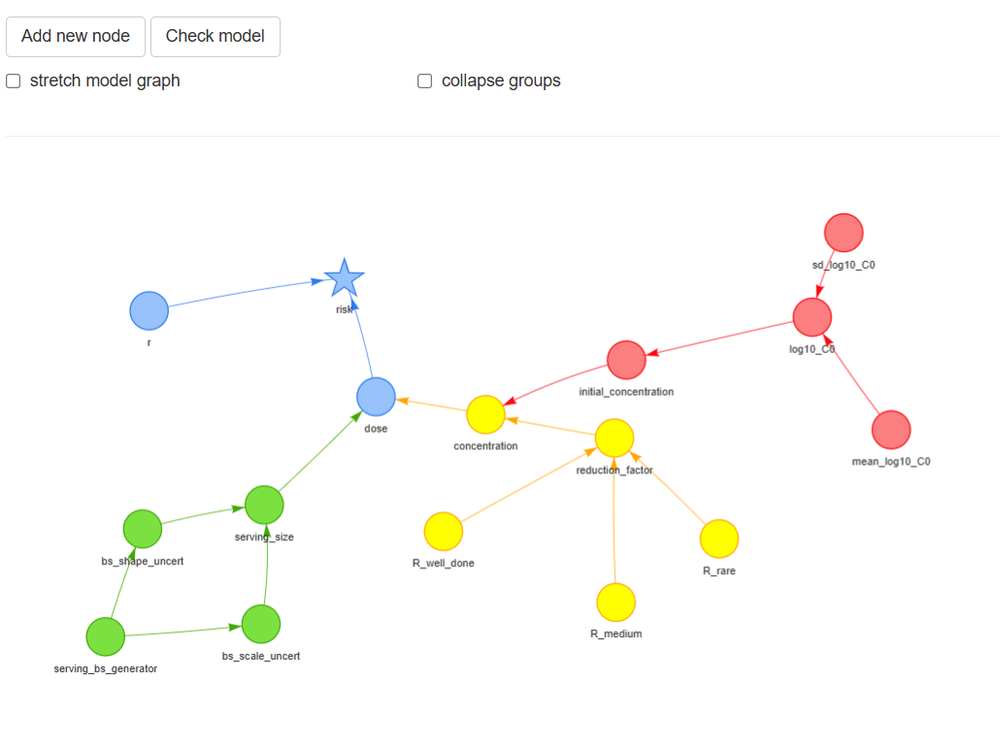
The next figure depicts the same model but with stretch model graph checked
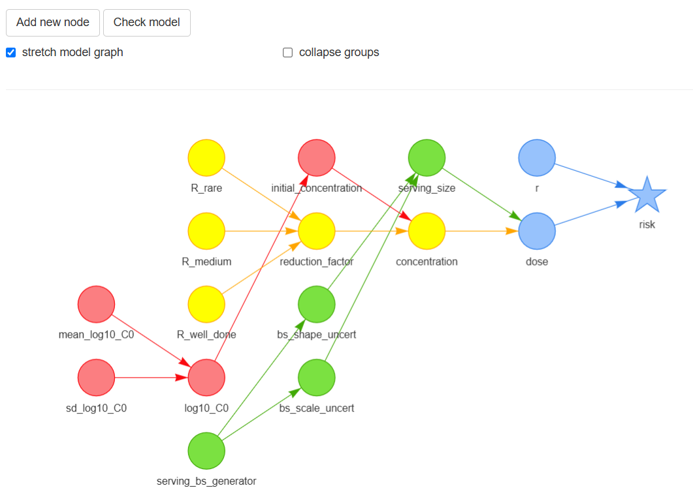
The other check box is “collapse groups”. If checked, all the nodes identified with the same “group name” will be hidden under the node identified with that group name. This is very useful when presenting a model with many nodes.
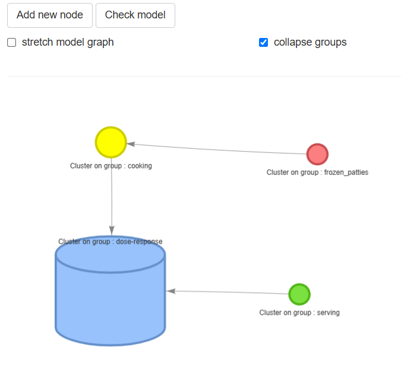
The user can click the mouse in any place on the screen that occupies the graph in order to move the whole graph, also the user can zoom in/zoom out using the appropriated combination of keys according to operating system (eg. Windows or MAC) or using the mouse. The user can double click on a node to open the node definition window (explained above).
In order to move down to the definition table, the user should move the mouse out of the graph window or use the siding bar on the screen.
Check Model
Once all the nodes have been properly defined, the user should select Check Model for model verification. The model verification features assures that all the nodes are linked and properly defined. An error will appear other wise. The user will need to check that there is no isolated nodes (which could be due to typo in the node’s names and/or an invalid equation)
Fixed parameters and functions
Running a simulation
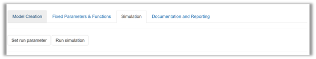
Before executing (run) the simulation, user can set up several parameters by clicking Set run parameter. After setting these parameters, click Change Parameter.
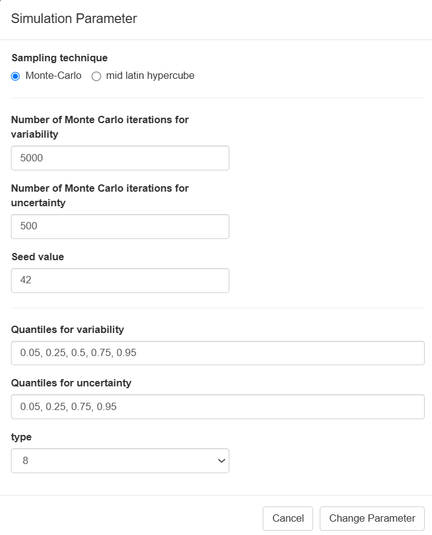
| SAMPLING TECHNIQUE | Select the random sampling method |
| NUMBER OF MONTE CARLO SIMULATIONS: VARIABILITY and UNCERTAINTY | Enter here the number of Monte Carlo random samples required for the simulation |
| QUANTILES: VARIABILITY and UNCERTAINTY | Enter here the percentiles for summarizing model results in the variability (1D) and uncertainty (2D) |
| SEED VALUE | Enter the integer number, this will allow to reproduce the same results |
| TYPE | ?@Robert |
After setting all the parameters, select Run Simulation. After the simulation is completed, shiny rrisk will present the another screen, with the general results (by default) and sensitivity plot.
@Robert - change to Sensitivity Analysis [change names in boxes to upper case to be consistent with other boxes]
The shiny rrisk server allocates a maximum memory of @@@ ro run the simulation. The amount of memory used is influenced by the number of nodes and the number of number samples required in the variability and uncertainty dimensions.
Since the number of nodes is part of the structure of the model, the amount of memory used will mainly depend of the number of random samples.
Usually, the number of samples are selected based on standard “magic” numbers, like 100, 1000, 10000, etc. However, there are some approaches that can be followed as a guidance to estimate an approximate number.
Usually, in risk and exposure assessments, the outcome is rare and large number of samples are required to obtain meaningful statistics.
If the true risk is rare, and you want at least n occurrences of the event, then you can use:
\(N>= n/p\)
Example: to observe at least 1 event with a p = 10-4
N >= 1/0.00001 = 10,0000 samples
Usually, the appropriated number of samples is an iterative exercise, where different simulations are run until we obtain consistent values for up to two/three digits of the mean or median.
Also, we can use consistent values within 0.005 for the 2.5% and 97.5% percentiles.
The convergence plot presented below can also be used as a guidance about the number of samples required to obtain a consistent mean estimate.
@need something about sampling methods maybe here for efficient number of samples
Two sampling methods can be used in shiny rrisk. The Latin Hypercube (LH) method is more efficient and will provide same accuracy as the Monte Carlo (MC) method with fewer samples. In addition the LH will assure that samples are taken from the whole distribution, which is also better for rare events. The LH might reduce the number of samples required by a factor of 10 compared with the MC method. The LH is the default method in shiny rrisk.
The LH method divides each random variable’s range into equal probability intervals (strata) according the number of samples required in the simulation and then take one sample from each interval per variable. Then the full coverage of each variable is sampled.
The graph below shows a simple example of how the LH sampling has a better coverage of the sampling space as compared to the MC method.

The table below compare the sampling methods to the True risk after taken 80 samples for two variables
| Method | Sample Size | Mean Risk | S.E. |
|---|---|---|---|
| True | —- | 0.017 | - |
| Monte Carlo | 80 | 0.038 | 0.021 |
| Latin Hypercube | 80 | 0.013 | 0.012 |
General Results
The results of all the nodes can be visualized from the drop down menu under Node. By default, shiny rrisk will start with the final node (eg. star shape node - or outcome).
Numerical result table
The output table will provide the summary statistics of each node according to the dimensions in variability and uncertainty. In addition, shiny rrisk will provide three plots in the natural scale or log10 transformed scale for summarizing the results.
One dimension Monte Carlo Model (1D MC) - Only Variability
The table below shows the results of the one dimension simulation for the E. coli in beef patties model after selecting 5000 random samples.
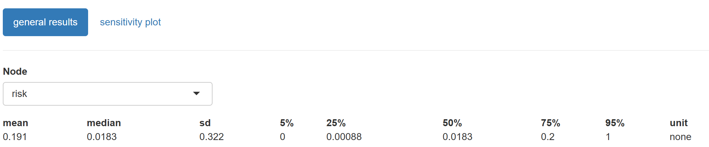
For 1D models, the results will be presented in only one row representing the variability of the node.
Two dimensions Monte Carlo Models (2D MC)- Variability and Uncertainty
The table below shows the results of the two dimension simulation for the E. coli in beef patties model after selecting 5000 and 500 random samples for the variability and uncertainty dimensions, respectively.
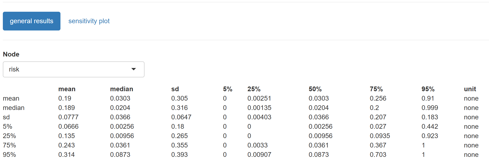
For 2D models, the summary statistics are presented in a matrix format, where rows represent uncertainty and the columns, the variability of the node.
Summary Plots
Histogram
This plot depicts the density distribution of the random values for a given node.
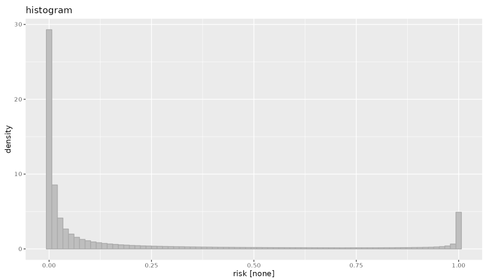
ECDF plot
This is the empirical cumulative density function plot, it is presented as an ascending cumulative plot. See read more for the proper interpretation of the graph.
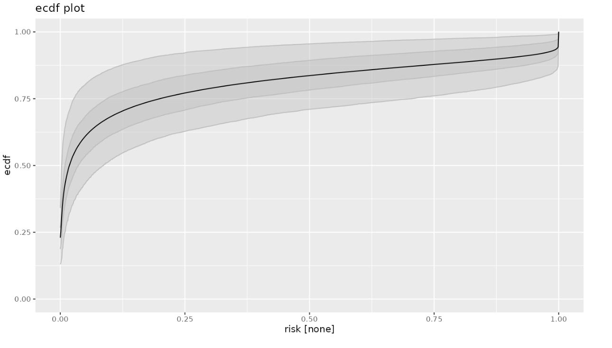
Convergence plot
@Robert - how to interpret this one?
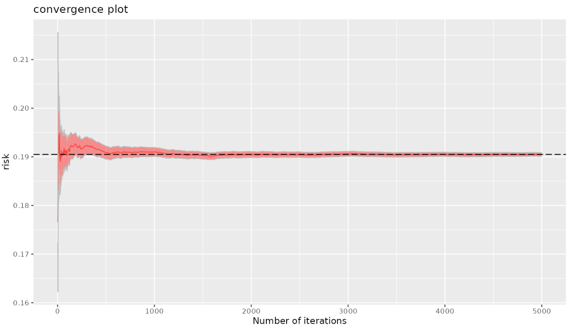
The following figure depicts the outcome of a probabilistic model that reflects both variability and uncertainty (2d MC).
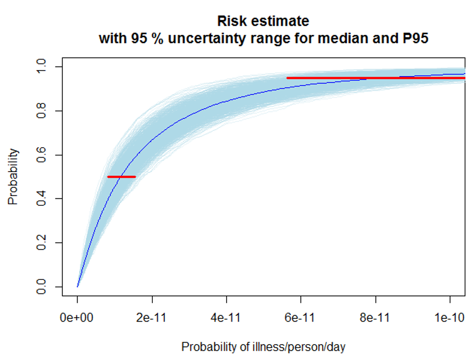
The central tendency (median) of the risk estimate can be read from the intersection of the dark blue line with the red line parallel to the x-axis at a probability value in the y-axis of 0.5. The value is around 1e-11.
The 95th percentile (P95) provides an estimate of the risk that captures 95% of the variability of the input parameters. It can be read from the graph by looking at the x-axis where upper red lines intersects with the dark blue line.
The uncertainty of the median and 95th can be read from range of values across the red lines for each statistic. The red lines represents the 95% probability intervals for the median and 95th percentile. For instance, the upper boundary of a 95 % uncertainty range for the P95 estimate when accounting for uncertainty is 1e-10.
Sensitivity Plot

The sensitivity analyses results can be visualized by selecting the sensitivity plot tab in the main screen after running the simulation. Shiny rrisk will produce a tornado plot using two stasticts, “Pearson correlation coefficient” and “Spearman rho statistic” (the R2 statistic will be implemented in future versions of shiny rrisk).
The following plots presents the 2D tornado plot using the Pearson statistic for the E. coli model. All the input variables are postively correlation withe outcome (eg. the larger is the value of the input, the larger is the risk). However there are major differences in the influence of each input variable on the outcome. For instance the initial concentration of the pathogen (log10_C0) has a Pearson correlation coefficient of approximately 0.6 followed by the reduction facors and concentration.
Since this is a 2D model, the tornado plot also present the 95%. probability interval due to the uncertainty of the risk outcome.
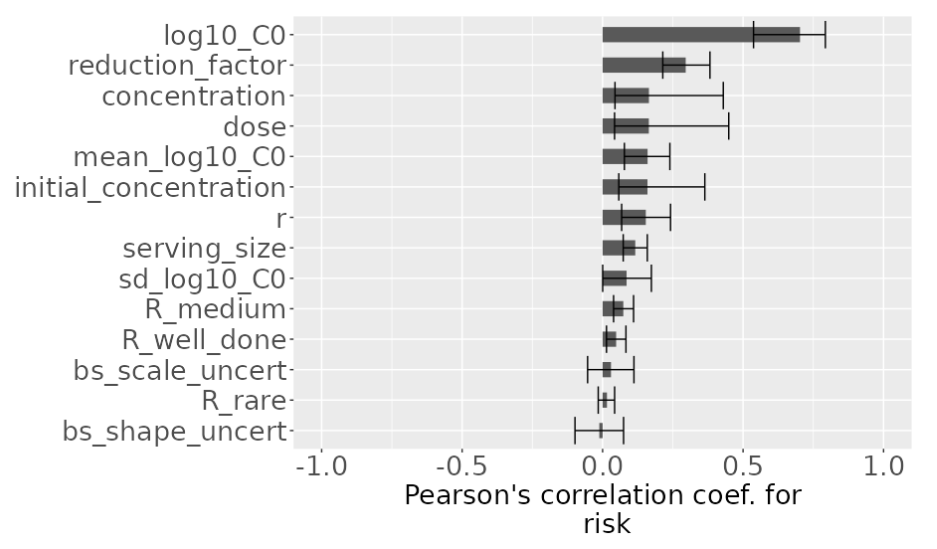
Tornado plots are commonly used in risk and exposure assessments models to assess the quantify the impact of input variables on the outcome of the model. This relationship is quantified using parametric (eg. Pearson correlation coefficient) or non-parametric (eg. Spearman rank correlation coefficient - rho -) statistics.
The graphs is created using all the input variables on the y-axis and the statistic on the x-axis, then the relationship is depicted using horizontal bars where the length of the bar represents the value of the statistic. This value is constraint by the boundaries of the statistic (eg. between -1 and 1). Where values below 0 represent an inverse relationship and values greater than 0, otherwise. For instance negative values suggest that higher values of the input are associates with lower values of the outcome variable.
In addition, for 2D models, each input variable has a line indicating the 95% probability interval of the relationship due to the uncertainty propagated in the model.
Pearson correlation coefficient. The relationship is captured assuming a linear relationship between the input variable and the outcome using the Pearson correlation coefficient.
Spearman rank correlation. The relationship is captured using the non-parametric rank correlation which does not assume any particulate shape of the relationship between the input and outcome.
This graphs are called “tornado” because the shape of the graphs resembles a “tornado”, funnel like shape since the variables ara sorted from highest values on the top to the lowest at the bottom.
Documenting and reporting

Under this menu you can save the Model (*.rrisk) to your working device as explained before.
The Report option will generate a word document report with all the information entered in shiny rrisk.
The Results option will generate datasets in “*.csv” format [@Robert **- no working so not sure what I am getting**]
Documentation and Reporting
This tab is left to add additional information about the model authors and a general description of the model (eg. question of interest and model scope, methodology used, resources, etc).
Generally, risk and exposure assessment [quantitative] models are complex, and are difficult to communicate to decision makers. Shiny rrisk has a unique feature that allows user to produce reports that can improve the communication of the model results to the end user. As it has been described before, shiny rrisk provides the user many instances during the model creation to enter information about the each input variable that later will be used in the report.
The user can enter the following information under Documentation and Reporting
an overall summary of the model
introduction to the problem
questions addressed and those not addressed;
overall discussion of data used and relation to model choice;
- methods of addressing decision questions with available information;
overview of model structure, how the sections relate together
major model assumptions and the impact on the results if incorrect;
critique of model, comment on validation
discussion of possible options for improvement,
extra data that would change the model or its results
During the node development, the user can think about this information, that later will be used in shiny rrisk to create the report
available data (references and datasets)
assumptions
explanation of equation derivations
Results
- guide on how to interpret and use statistical and graphical outputs